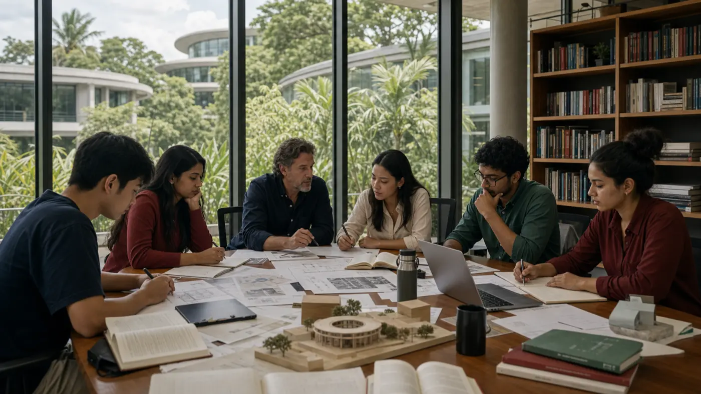

Honours degrees, built across the whole university.荣誉学位，跨越整所大学而建。
Three-year honours degrees that draw on all five faculties — the interdisciplinary core of Future Citizen University.三年制荣誉学位，汲取五大学院之长——未来公民大学的跨学科内核。

Breadth first, then disciplined specialisation.先建立广度，再走向有纪律的专精。
The undergraduate experience begins with shared foundations across the University, then moves into specialist study, project work and an honours year. Students learn to read systems, build arguments, work with evidence and connect ideas across fields.本科阶段先从全校共享的基础学习开始，再进入专业学习、项目实践与荣誉之年。学生学习如何理解系统、建立论证、运用证据，并在不同领域之间连接思想。
Shared foundations共享基础
Common intellectual tools prepare students before specialisation.共同的思想工具为后续专精奠定基础。
Project work项目实践
Applied briefs connect learning with real institutional and civic questions.应用型任务把学习连接到真实的机构与公共问题。
Academic judgement学术判断
Seminars build clarity, argument and responsible interpretation.研讨教学培养清晰表达、论证能力与负责任的解释。
Honours year荣誉之年
Advanced study culminates in independent work and deeper specialisation.高阶学习最终进入独立工作与更深入的专精。
A three-year route from foundation to independent work.从基础学习走向独立工作的三年路径。
Undergraduate study is intentionally sequenced: students establish common methods, deepen a field of concentration, complete substantial honours work and prepare for employment, Master's study or research progression.本科阶段经过有意设计的顺序：学生先建立共同方法，再深化专业方向，完成实质性的荣誉学位工作，并为就业、硕士学习或研究进阶做好准备。
Year 1 foundation第一年基础
Students build shared academic language across systems, evidence, technology, institutions and communication.学生围绕系统、证据、技术、机构与沟通建立共同的学术语言。
Year 2 concentration第二年专精
Specialist modules and projects help students connect a chosen field with wider civic and digital questions.专业模块与项目帮助学生把所选领域连接到更广泛的公共与数字时代问题。
Year 3 honours work第三年荣誉工作
Advanced seminars and supervised independent work ask students to demonstrate judgement, method and synthesis.高阶研讨与导师指导下的独立工作要求学生展现判断力、方法能力与综合能力。
Progression后续进阶
Graduates leave with a clear basis for professional entry, Master's study or later research formation.毕业生由此具备进入专业领域、攻读硕士或继续形成研究能力的清晰基础。
Undergraduate study forms habits of judgement, responsibility and independent work.本科教育形成判断力、责任感与独立工作的习惯。
The honours degree is not only a sequence of modules. It is a formation of intellectual habits that help graduates read complex systems, work with evidence and act with public consequence in view.荣誉学位不只是模块的排列。它形成一套思想习惯，使毕业生能够理解复杂系统、运用证据，并在行动时看见其公共影响。
Systems literacy系统理解力
Graduates learn to interpret how technology, institutions, markets, communities and culture shape one another.毕业生学习理解技术、机构、市场、社群与文化如何彼此塑造。
Evidence and argument证据与论证
Students are expected to make claims carefully, test assumptions and communicate conclusions with intellectual discipline.学生需要谨慎提出主张、检验假设，并以有学术纪律的方式表达结论。
Ethical responsibility伦理责任
Undergraduate work asks students to consider the consequences of design, policy, finance, media and computation for public life.本科工作要求学生思考设计、政策、金融、媒体与计算对公共生活的后果。
Independent contribution独立贡献
The honours year prepares students to produce substantial work and to enter employment, Master's study or research with clearer direction.荣誉之年帮助学生完成有分量的工作，并以更清晰的方向进入就业、硕士学习或研究路径。
Students are guided from first choices to honours work.学生从最初选择到荣誉工作都获得学术指导。
Advising helps students connect shared foundations, concentration choices, project work and progression into Master's or research routes.学术指导帮助学生把共享基础、专业方向、项目实践以及硕士或研究进阶连接起来。
Foundation choices基础选择
Tutors help students interpret the first-year foundation and understand how each field opens later options.导师帮助学生理解第一年的基础学习，并看清各领域如何打开后续选择。
Concentration planning专业规划
Students choose a concentration with attention to academic strengths, professional aims and the questions they want to pursue.学生结合自身学术优势、专业目标与想要追问的问题来选择专业方向。
Project direction项目方向
Supervised project work helps students move from broad interest to clear evidence, method and argument.导师指导下的项目工作帮助学生从宽泛兴趣走向清晰的证据、方法与论证。
Progression advice进阶建议
Advising prepares students for employment, Master's study or later research by making next steps explicit.学术指导把下一步路径讲清楚，帮助学生准备就业、硕士学习或后续研究。
Foundation, specialisation, honours.基础、专精、荣誉。
Every honours degree follows the same three-year shape — a broad interfaculty foundation, a specialist core, and an honours year.每一个荣誉学位都遵循同一种三年架构——宽广的跨学院基础、专业核心，以及荣誉之年。
Three degrees for the digital age.三个面向数字时代的学位。
Each is interfaculty by design, combining several of the University's domains into a single honours degree.每一个都以跨学院为设计原则，将大学的多个领域融为一个荣誉学位。
Detailed programme pages set out structure, level and study aims.各课程详情页说明课程结构、等级与学习目标。
The problems you'll face don't respect subject boundaries.你将面对的问题，不分学科边界。
Governance, technology, economy, people and design are entangled in almost every real challenge. An interfaculty honours degree teaches you to move between them with confidence — the defining advantage of a Future Citizen education.治理、技术、经济、人与设计，几乎在每一个真实挑战中彼此交织。一门跨学院的荣誉学位，让你能够在它们之间自如穿行——这正是未来公民教育的独特优势。